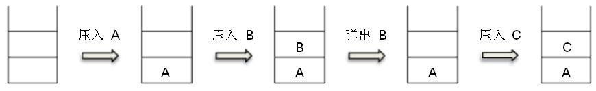

一、单选题（共15 题，每题 2 分，共计 30 分；每题有且仅有一个正确选项）
| 1. | 以下哪一种设备属于输出设备：（ ）。 |
|---|
| 2. | 下列四个不同进制的数中，与其它三项数值上不相等的是（ ）。 |
|---|
| 3. | 1MB等于（ ）。 |
|---|
| 5. | 中国计算机学会用于（ ）年创办全国青少年计算机程序设计竞赛。 |
|---|
| 6. | 如果开始时计算机处于小写输入状态，现在有一只小老鼠反复按照CapsLock、字母键A、字母键S、字母键D、字母键F的顺序循环按键，即CapsLock、A、S、D、F、CapsLock、A、S、D、F、……，屏幕上输出的第81个字符是字母（ ）。 |
|---|
| 7. | 根节点深度为0，一棵深度为h的满k(k>1）叉树，即除最后一层无任何子节点外，每一层上的所有结点都有k个子结点的树，共有()个结点 |
|---|
| 8. | 以下排序算法中，不需要进行关键字比较操作的算法是（ ）。 |
|---|
| 9. | 给定一个含N个不相同数字的数组，在最坏情况下，找出其中最大或最小的数，至少需要N-1次比较操作。则最坏情况下，在该数组中同时找最大与最小的数至少需要(）次比较操作。(「]表示向上取整，[]表示向下取整) |
|---|
| 10. | 从前有座山，山里有座庙，庙里有个老和尚在给小和尚讲故事:“从前有座山，山里有座庙，庙里有个老和尚在给小和尚讲故事:‘从前有座山，山里有座宙，雇里有个老和尚给小和尚讲故事……’ ” |
|---|
| 11. | 由四个没有区别的点构成的简单无向连通图的个数是（ ）个。 |
|---|
| 12. | 设含有10个元素的集合的全部子集数为S,其中由7个元素组成的子集数为T，则T/S的值为(）。 |
|---|
| 13. | 10000以内，与10000互质的正整数有（）个。 |
|---|
| 14. | 为了统计一个非负整数的二进制形式中1的个数，代码如下:
int CountBit(int x) { int ret=0; while(X) { ret++; __________; } return ret; } 则空格内要填入的语句是( )。 |
|---|
| 15. | 下图中所使用的数据结构是( )。
 |
|---|
二、问题求解 （共2 题，每题 5 分，共计 10 分）
| 1. | 甲乙丙丁四人在考虑周末要不要外出郊游。 已知1如果周末下雨，并且乙不去，则甲一定不去；2如果乙去，则丁一定去；3如果丙去，则丁一定不去；4如果丁不去，而且甲不去，则丙一定不去。 如果周末丙去了，则甲(去了/没去)(1 分)， 乙(去了/没去)(1 分)， 丁(去了/没去)(1 分)， 周末(下雨/ 没下雨)(2 分)。 |
|---|
| 2. | 从 1 到 2018 这 2018 个数中，共有个包含数字 8 的数。 包含数字 8 的数是指有某一位是“8”的数，例如“2018”与“188”。 |
|---|---|
三、阅读程序写结果（共4 题，每题 8 分，共计 32 分）
| 1. |
01 #include <cstdio>
02 char st[100];
03 int main() {
04 scanf("%s", st);
05 for (int i = 0; st[i]; ++i) {
06 if ('A' <= st[i] && st[i]<= 'Z')
07 st[i] += 1;
08 }
09 printf("%s\n", st);
10 return 0;
11 }
|
||||
|---|---|---|---|---|---|
|
| 2. |
01 #include <cstdio>
02 int main() {
03 int x;
04 scanf("%d", &x);
05 int res = 0;
06 for (int i = 0; i < x; ++i) {
07 if (i * i % x == 1) {
08 ++res;
09 }
10 }
11 printf("%d", res);
12 return 0;
13 }
|
||||
|---|---|---|---|---|---|
|
| 3. |
01 #include <iostream>
02 using namespacestd;
03 int n, m;
04 int findans(int n, int m) {
05 if (n == 0) return m;
06 if (m == 0) return n % 3;
07 return findans(n - 1, m) - findans(n, m - 1) +findans(n - 1, m - 1);
08 }
09 int main(){
10 cin>>n>>m;
11 cout<<findans(n, m)<<" ";
12 return 0;
13 }
|
||||
|---|---|---|---|---|---|
|
| 4. |
01 #include <cstdio>
02 int n, d[100];
03 bool v[100];
04 int main() {
05 scanf("%d", &n);
06 for (int i = 0; i < n; ++i) {
07 scanf("%d", d + i);
08 v[i] = false;
09 }
10 int cnt = 0;
11 for (int i = 0; i < n; ++i) {
12 if (!v[i]) {
13 for (int j = i; !v[j]; j = d[j]) {
14 v[j] = true;
15 }
16 ++cnt;
17 }
18 }
19 printf("%d\n", cnt);
20 return 0;
21 }
|
|||
|---|---|---|---|---|
|
四、完善程序（共2 题，每题 14 分，共计 28 分）
| 1. | （最大公约数之和）下列程序想要求解整数𝑛的所有约数两两之间最大公约数的和对10007求余后的值，试补全程序。（第一空 2 分，其余 3 分） 举例来说，4的所有约数是1,2,4。1和2的最大公约数为1；2和4的最大公约数为2；1和4的最大公约数为1。于是答案为1 + 2 + 1 = 4。 要求 getDivisor 函数的复杂度为0(√n)，gcd 函数的复杂度为O(log max(a, b))。 |
|---|---|
01 #include |
| 2. |
对于一个1到n的排列p(即1到n中每一个数在p中出现了恰好一次)，令qi>为第i个位置之后第一个比pi值更大的位置，
如果不存在这样的位置，则qi >=n+1。
举例来说，如果n=5且p为1 5 4 2 3，则q为2 6 6 5 6。
下列程序读入了排列p，使用双向链表求解了答案。试补全程序。（第二空2分，其余3分）
数据范围 1 ≤ n ≤ 105。 |
|---|---|
01 #include <iostream>
02 using namespace std;
03 const int N =100010;
04 int n;
05 int L[N], R[N],a[N];
06 int main() {
07 cin >> n;
08 for (int i = 1; i <= n; ++i) {
09 int x;
10 cin >> x;
11 ;
12 }
13 for (int i = 1; i <= n; ++i) {
14 R[i]= ;
15 L[i] = i - 1;
16 }
17 for (int i = 1; i <= n; ++i) {
18 L[ ]= L[a[i]];
19 R[L[a[i]]] = R[ ];
20 }
21 for (int i = 1; i <= n; ++i) {
22 cout << <<" ";
23 }
24 cout << endl;
25 return 0;
26 } |